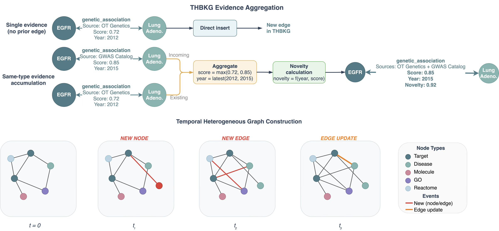
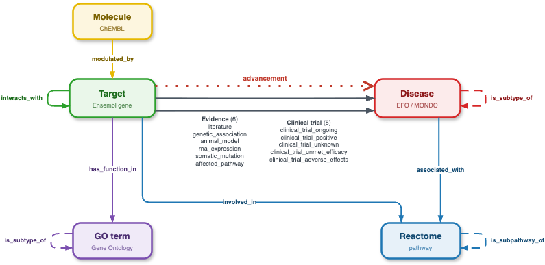
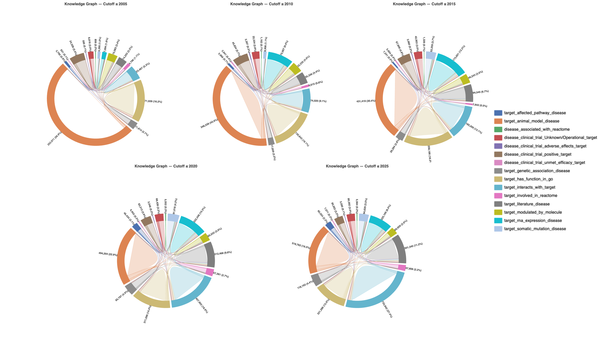
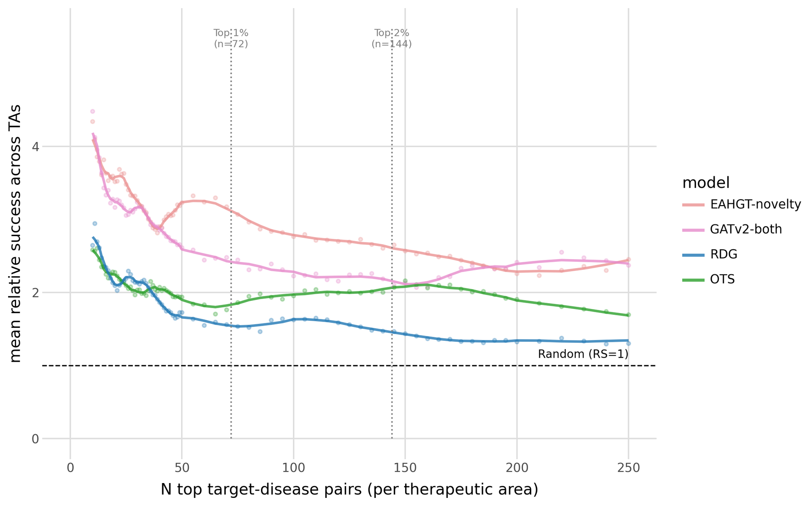
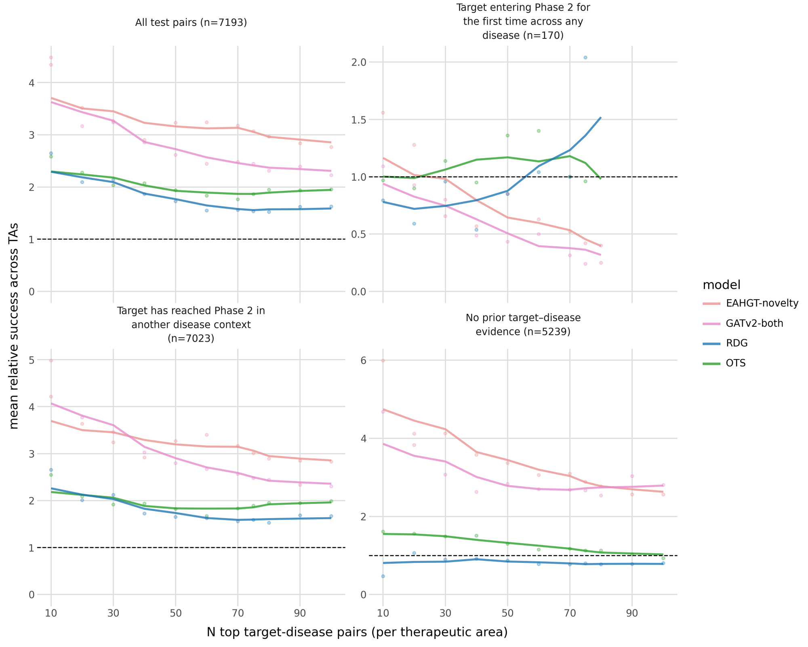
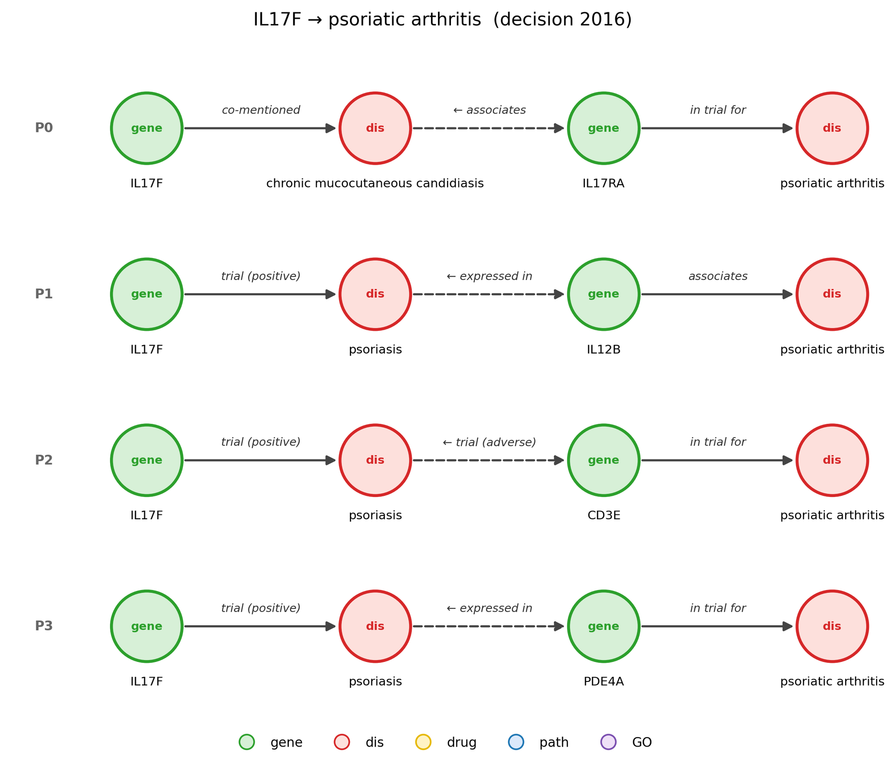
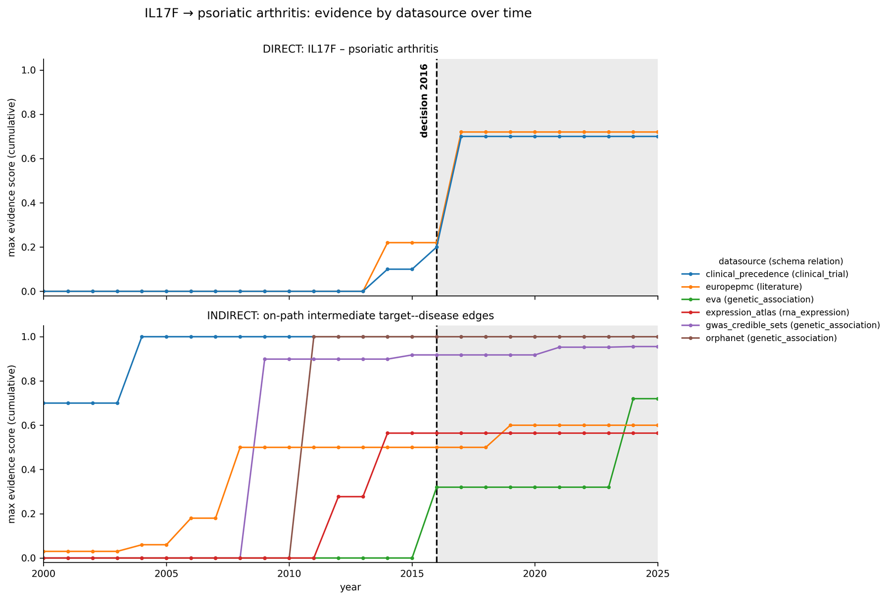

1Queen Mary University of London·2Recursion Pharmaceuticals
† Corresponding authors: c.cabrera@qmul.ac.uk, mani.mudaliar@recursion.com, a.zubiaga@qmul.ac.uk
Inadequate target–disease linkage accounts for 40–50% of Phase II efficacy failures, so anticipating which programmes will advance would let sponsors back the hypotheses most likely to reach patients. What a programme can be judged on is the evidence that supported its linkage when it entered the clinic. No existing biomedical knowledge graph allows that evidence profile to be assembled as of a past date. We present the Temporal Heterogeneous Biomedical Knowledge Graph (THBKG), which describes and predicts therapeutic target–disease links through time: 110,396 entities and 11.1M edges across nineteen relation types, each dated by the year its evidence first appeared, so a pair's profile can be recovered as it stood when its own decision fell due. On this graph we define a decision-aligned benchmark that predicts, for a target–disease pair entering Phase II, whether it advances to Phase III on evidence datable before that decision. Graph propagation over the THBKG outperforms the prior state of the art, a tabular model over engineered evidence features, reaching a relative success of 4.5 at the top ten pairs per therapeutic area against 2.7. The margin is widest on the 72% of pairs carrying no direct target–disease evidence at their decision point, where the encoders enrich five- to sixfold over random ranking on support no direct-edge model can see. Because the score is computed on a dated subgraph, a path-based explainer decomposes each prediction into the observations behind it, the route they travelled, and when each entered the record. We release the THBKG as a continually updated substrate for studying therapeutic target hypotheses by retrospective validation.
Every edge in the THBKG carries the year its evidence first appeared, so each target–disease pair is scored only on the graph as it stood at its own Phase II decision. Under that constraint, graph propagation finds signal that a direct-evidence model cannot see.
Relative success at the top ten pairs per therapeutic area, graph encoders against the tabular model over engineered evidence features.
72% of pairs have no direct target–disease evidence at their decision point; the encoders still enrich five- to sixfold over random ranking.
A path-based explainer breaks each prediction into the observations behind it, the route they travelled, and when each entered the record.
Evidence records from Open Targets, Gene Ontology, Reactome, IntAct, the Human Protein Atlas and ClinicalTrials.gov are scored and dated, then assembled into five node types joined by sixteen temporal and three static relations. Cutting the graph at a year gives the evidence available then.


targets, diseases, molecules, GO terms, pathways
over 19 relation types
target–disease pairs entering Phase II
current build; every source version pinned
The mix of evidence changes as the record grows: animal-model evidence makes up more than half the graph at 2005, while protein interactions and literature take a growing share later. A model trained on today's graph would see a different world from the one each decision was made in.

Each example is a target–disease pair at its Phase II entry. Models rank pairs using only evidence dated strictly before that year. Labels follow a fixed horizon: a pair is positive if it reached Phase III by 2018 (train) or 2024 (evaluation). The primary metric is relative success at top N, reported per therapeutic area.
Split sizes for the current 26.09 release.


Because each score is computed on a dated subgraph, the explainer can show the multi-hop routes between a target and a disease and the year each piece of evidence entered the record. Case study: IL17F → psoriatic arthritis, decided in 2016.


THBKG is rebuilt on each Open Targets release. The paper's results use the 26.03 build, which stays
available as Hugging Face revision v26.03. Builds are not directly comparable: disease
identifiers moved from EFO to MONDO in 26.06, and 26.09 adds substantially more clinical data.
| Build | 26.09 (current) | 26.03 (paper) | Change |
|---|---|---|---|
| Nodes | 109,087 | 110,396 | −1% |
| Edges | 13.64M | 11.07M | +23% |
| Clinical-trial edges | 275,414 | 171,316 | +61% |
| Labelled pairs | 47,802 | 28,795 | +66% |
| Evaluation pairs | 13,062 | 7,193 | +82% |
# load the current release (pickle-free: safetensors + parquet) from huggingface_hub import snapshot_download from load_thbkg import load_graph, load_labels # shipped with the dataset path = snapshot_download("jspc00012567/THBKG", repo_type="dataset") graph = load_graph(path) # PyG HeteroData train = load_labels(path, "train") # target_id, disease_id, transition_year, outcome # the paper's 26.03 build snapshot_download("jspc00012567/THBKG", repo_type="dataset", revision="v26.03")